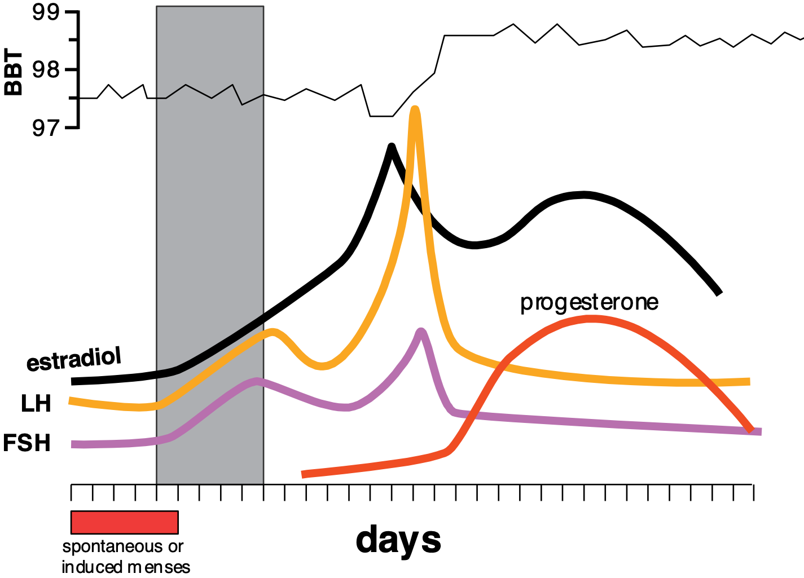
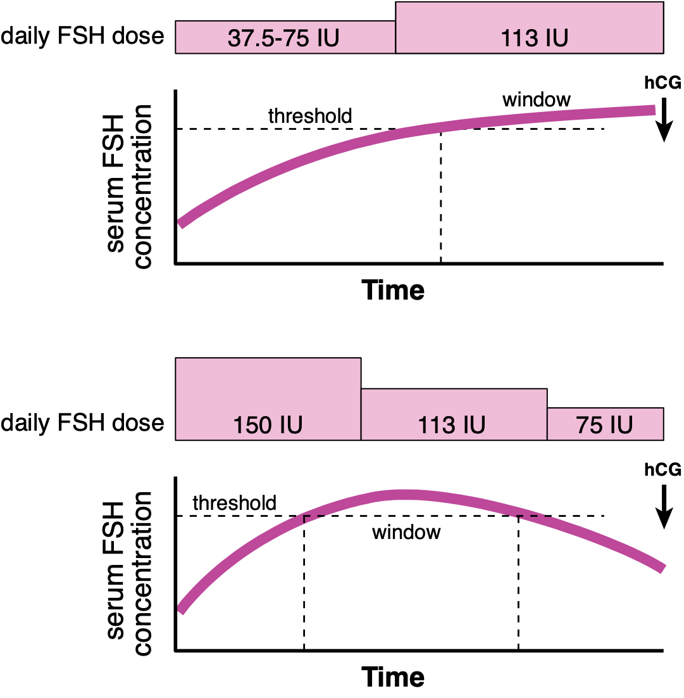

In this section, we will discuss disorders of the female reproductive system that excludes pregnancy, childbirth, and postpartum.
Primary amenorrhea is defined as either (1) no period by age 14 in the absence of growth or development of 2º sexual characteristics, or (2) no period by the age of 16. Secondary amenorrhea is defined the absence of a period for a length of time equivalent at least 3 cycles or 6 months in a previously menstruating woman.
Amenorrhea can be caused by disorders of:
Clinically, infertility is defined as failure of a couple to conceive within a period of time 12 mos if woman < 35YO, 6 mos if woman ≥ 35YO. While "infertility" is often used, subfertility is a more accurate diagnosis prior to establishing the cause of the infertility. Another term to be familiar with is fecundability, the probability of a woman to conceive within one month🔴🟡. The "normal" value of fecundability is 20% (according to various sources).
The WHO classify causes of female infertility into 3 classes:
Treatments for infertility include: oral medication (ex. clomiphene citrate, letrozole), injectable medication (SQ recombinant FSH/LH/hCG), intrauterine insemination, and IVF.
When using clomiphene, it is important to slowly step up the dose from 37.5-75 IU/d until serum FSH reaches the threshold concentration. Once this concentration is reached, the dosage is then stepped down back then stopped completely. Clomiphene is administered approximately 4 days after menses starts.


Clomiphene treatment protocols.The risks of these include multiple pregnancies, ovarian cysts, and cancer (?).
The diagnostic criteria of PCOS are:
| NIH criteria | Rotterdam criteria | PCOS Society guidelines |
|---|---|---|
| Hyperandrogenism Oligo-/anovulation |
Two of the following: Hyperandrogenism Oligo-/anovulation Polycystic ovarian (PCO) morphology* |
Hyperandrogenism Oligo-/anovulation OR PCO morphology |
*PCOS is defined ≥ 12 follicles in each ovary 2‑9 mm in diameter.
Other signs observed in patients with PCOS includes obesity (≥ 50%), HTN, dyslipidemia, impaired glucose tolerance, DM2, and metabolic syndrome. PCOS is a diagnosis of (reasonable) exclusion. Its differential include:
The ones on the left typically present with oligo-/anovulation without hyperandrogenism; the ones on the right typically present oligo-/anovulation with hyperandrogenism.